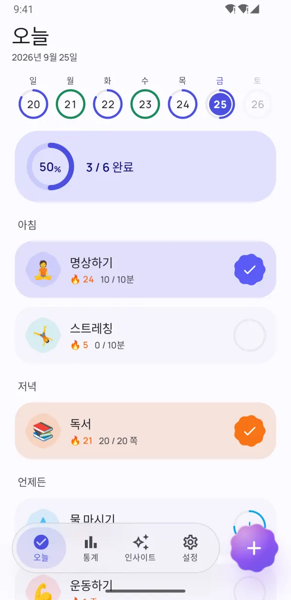
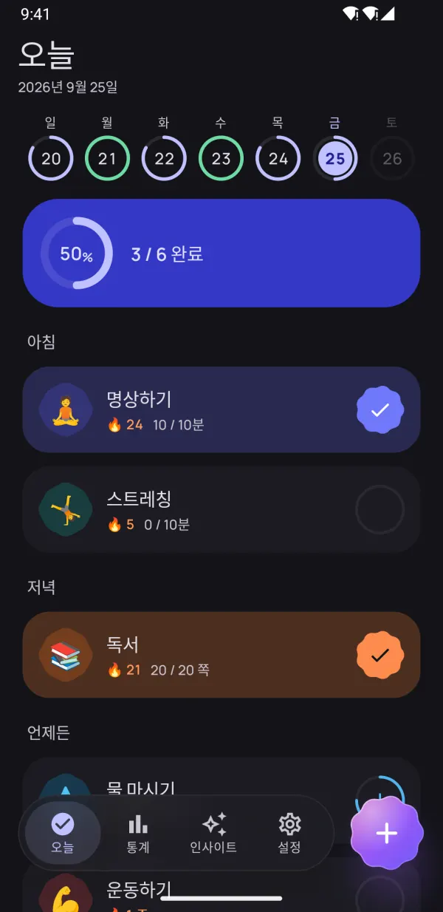
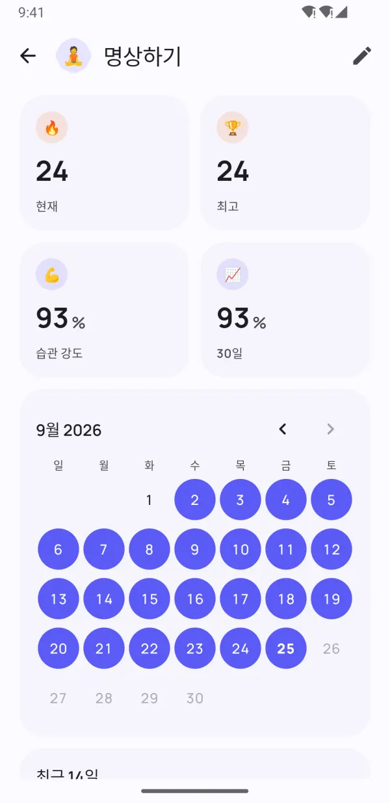
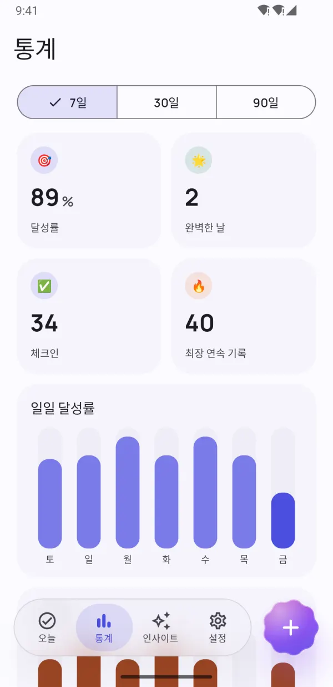
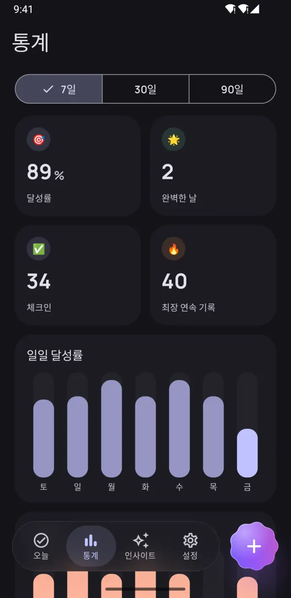
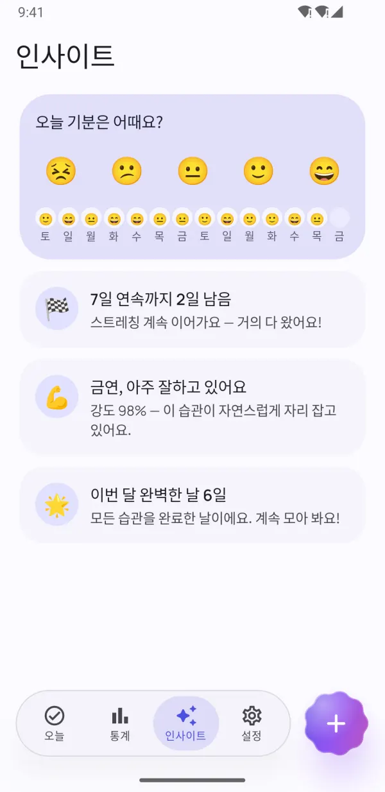
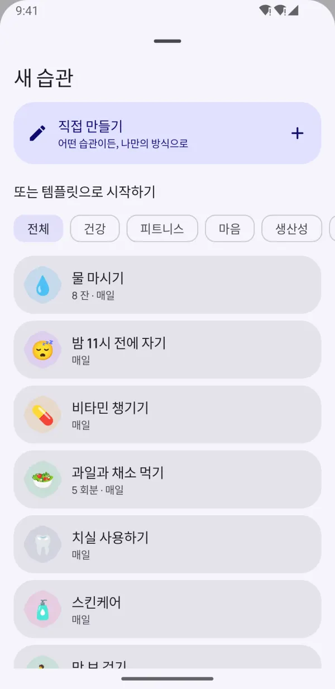
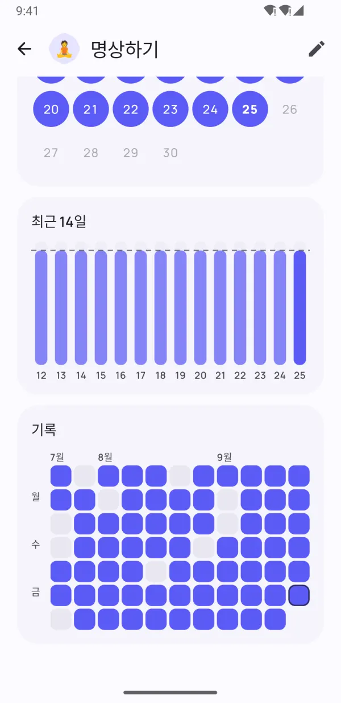

작은 습관이
큰 변화를 만들어요.
Dotday는 좋은 습관은 만들고 나쁜 습관은 끊을 수 있도록 부담 없이 도와드려요. 탭 한 번으로 체크하고, 바쁜 날에도 스트릭을 지키고, 나에게 정말 맞는 루틴을 찾아보세요.
- 무료로 사용
- 가입 필요 없음
- 데이터는 내 폰에만
- 13개 언어 지원


습관이 자리 잡도록
꾸준함에 필요한 건 모두 담고, 방해되는 건 모두 뺐어요.
하루 전체를 탭 한 번으로
아침·오후·저녁 그룹으로 루틴이 간단한 체크리스트가 돼요. 한 번 탭하면 끝.
- 예/아니요, 횟수, 타이머, 끊기 습관
- 주간 바에서 매일의 기록을 한눈에
- 알림에서 바로 '완료', '10분 후'

하루 놓쳐도 괜찮은 스트릭
쉬는 날, 유연한 일정, 스트릭 프리즈로 꾸준히 이어가세요. 습관 강도는 스트릭 길이만이 아니라 습관이 얼마나 탄탄하게 자리 잡았는지 보여줘요.
- '이날 건너뛰기'로 스트릭을 지켜요
- 바쁘거나 아픈 날엔 스트릭 프리즈
- 0~100% 습관 강도 점수


진짜 성장을 확인하세요
히트맵, 캘린더, 달성률 추이로 7일·30일·90일 동안의 흐름을 정확히 보여줘요.
- 모든 습관의 히트맵
- 최장 연속 기록과 달성률
- 라이트 모드도 다크 모드도 예쁘게

계속하게 만드는 인사이트
기분을 1초 만에 기록하면 Dotday가 정말 효과 있는 걸 찾아줘요. 가장 잘한 날과 힘든 날, 그리고 기분을 좋게 하는 습관까지.
- 탭 한 번으로 기분 체크
- 다음 목표 직전의 응원 알림
- 나를 더 행복하게 하는 습관 찾기
작은 디테일, 큰 차이
기록을 편하게 만드는 세심한 기능들.
홈 화면 위젯
앱을 열지 않고도 오늘의 습관을 체크하고, 스트릭이나 히트맵을 확인하세요.
제대로 작동하는 알림
알림에서 바로 '완료'를 누르거나 '10분 후'로 미룰 수 있어요.
타이머 내장
시간 기반 습관에는 실시간 알림 타이머가 함께해요.
Health Connect
걸음 수, 수면, 운동으로 습관을 자동 완료할 수 있어요.
40가지 템플릿
물 마시기, 독서, 운동, 명상, 금연 — 몇 초 만에 시작하세요.
하루 계획
습관을 아침·오후·저녁으로 나눠 정리하세요.
메모와 기분
어떤 날이든 메모를 남기고, 습관이 기분에 어떤 영향을 주는지 확인하세요.
다크 모드 & AMOLED
Material You 색상과 OLED 화면용 퓨어 블랙 테마.
백업 & 내보내기
Pro에서는 모든 데이터를 JSON이나 CSV로 내보내고, 새 폰에서 복원할 수 있어요.
앱 미리 보기
오래가는 습관 만들기 진짜 성장을 확인하세요 통계를 한눈에 동기를 주는 인사이트 
40개 템플릿으로 바로 시작 다크 모드도 아름답게 
매일을 예쁘게 기록 개인 정보 보호. 계정·광고 없음
습관 고르기
40가지 템플릿에서 고르거나 직접 만들어 보세요. 어떤 습관이든 내 방식대로.
매일 체크하기
'오늘' 화면, 위젯, 알림에서 탭 한 번이면 돼요.
습관이 자리 잡는 걸 지켜보기
스트릭, 습관 강도, 인사이트로 성장하는 모습을 확인하세요.
처음부터 프라이버시 중심
계정 없음. 가입 없음. 광고 없음. 습관, 메모, 기분 기록은 내 휴대폰에만 저장되고, 저희도 볼 수 없어요. 개인정보처리방침
- 계정 없음
- 광고 없음
- 오프라인
- 내 데이터는 내 폰에
Pro로 모든 기능을
기본 기능은 평생 무료예요. Pro로 업그레이드하면 무제한 습관과 모든 기능을 쓸 수 있어요 — 7일 무료 체험 가능.
- 무제한 습관
- 전체 기록과 90일 통계
- 모든 인사이트와 기분 상관관계
- Health Connect 자동 기록
- 모든 위젯
- 매달 스트릭 프리즈 5개
- 습관당 최대 5개 알림
- JSON 및 CSV 내보내기
월간, 연간, 평생 이용권(한 번 결제) 중에서 골라 보세요. Google Play에서 언제든 해지할 수 있어요.
자주 묻는 질문
Dotday는 무료인가요?
네. 기본 기능은 평생 무료예요: 습관 최대 5개, 알림, 스트릭, '오늘' 위젯, 30일 통계를 쓸 수 있어요. Dotday Pro는 무제한 습관과 모든 기능을 제공하며, 7일 무료 체험이 있어요.
계정을 만들어야 하나요?
아니요. Dotday는 계정, 가입, 인터넷 연결 없이 작동해요. 설치하고 바로 시작하세요.
데이터는 어디에 저장되나요?
내 휴대폰에만 저장돼요. 습관, 메모, 기분 기록은 기기 밖으로 나가지 않아요. Pro에서는 언제든 JSON이나 CSV로 백업을 내보낼 수 있어요.
하루를 놓치면 어떻게 되나요?
그동안의 기록은 사라지지 않아요. 쉬는 날로 그날을 건너뛰거나, 스트릭 프리즈를 쓰거나, 매일 대신 주간 목표를 정할 수 있어요. 습관 강도도 0으로 초기화되지 않고 천천히 내려가요.
어떤 습관을 기록할 수 있나요?
네 가지 유형이 있어요: 예/아니요("명상하기"), 횟수("물 8잔"), 타이머("30분 독서"), 끊기 습관("금연").
새 폰으로 습관을 옮기려면 어떻게 하나요?
Dotday Pro에서 설정 → 내 데이터 → 백업 내보내기를 열고 JSON 파일을 저장하세요. 새 폰에 Dotday를 설치한 뒤 '백업에서 복원'을 선택하면 돼요. 복원은 무료예요.
아이폰 버전도 있나요?
아직 없어요. Dotday는 현재 Google Play에서 Android용으로 제공돼요.
Pro를 해지하려면 어떻게 하나요?
Google Play → 프로필 → 결제 및 정기 결제 → 정기 결제에서 Dotday를 선택하고 '해지'를 누르세요. 평생 이용권은 해지할 필요가 없어요.